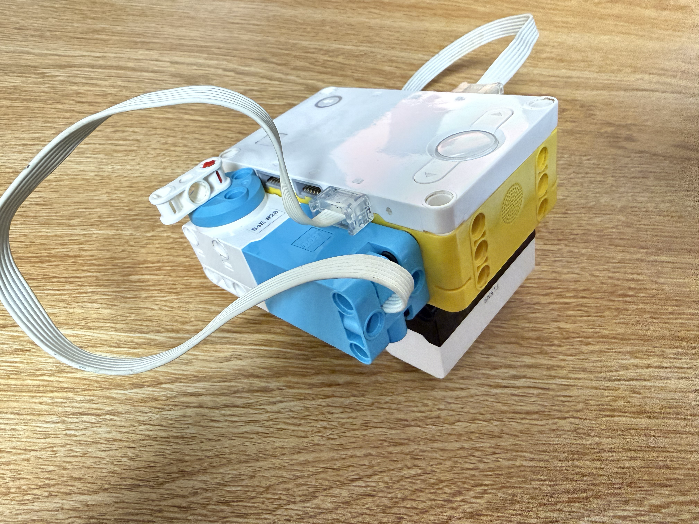

Supervised Classification Machine Learning
Using labeled data to train a model that can determine “high” or “low” based on the nearest neighbor. The left hub button puts the model into training mode, where I can label the distance from the distance sensor as tall or short. When the indicator is turned to the left the data collected will be labeled short and the right will label it tall. After collecting the data, the right hub button will put the model into testing mode. Based on the distance, the motor will turn 90 degrees clockwise if the height is short and will turn 90 degrees counterclockwise if the height is tall.